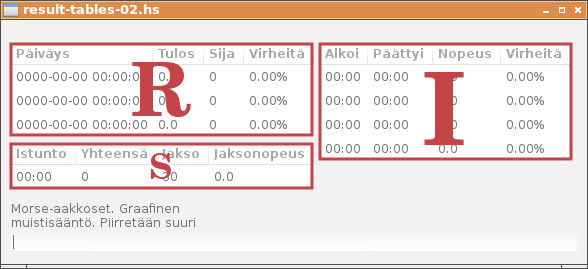

Hatupist on kirjoitusnopeuden harjoitusohjelma. Rakennamme ohjelman alkaen tyhjästä ikkunasta. Käytämme Haskell-ohjelmointikieltä ja Gtk2hs-käyttöliittymäkirjastoa.
Seuraava ohjelma avaa yksinkertaisen tyhjän ikkunan:
import Graphics.UI.Gtk
main = do
initGUI
window <- windowNew
onDestroy window mainQuit
widgetShowAll window
mainGUI
Funktio onDestroy on tapahtumankäsittelijä, joka määrittää ikkunan käyttäytymisen suljettaessa ikkuna esimerkiksi hiirellä ruksia naksautettaessa. Toimenpide yhdistetään funktioon mainQuit, joka on ohjelman lopetuskomento.
Tallenna ohjelma nimellä plain-ui.hs ja anna pääteikkunaan komento runhaskell plain-ui.hs. Ohjelma käynnistyy tulkattavassa muodossa ja tuottaa seuraavan ikkunan ruudulle:
Katsotaan seuraavaksi tiedostoa plain-ui-002.hs
Ajettaessa komennolla runhaskell plain-ui-002.hs ohjelma tuottaa seuraavan ikkunan:

Ohjelma sisältää kaksi tyypin Label komponenttia ja tekstikentän tyyppiä Entry. Ne luodaan funktioilla labelNew ja entryNew. Komponentit sijoitetaan vertikaaliseen laatikkoon vbox joka luodaan funktiolla vBoxNew. Näiden lisäksi käytetään erottimia sep1 ja sep2 tyhjän tilan saamiseksi komponenttien väliin. Erottimet luodaan funktiolla hSeparatorNew. Kukin komponentti paketoidaan vertikaaliseen laatikkoon vbox funktiolla boxPackStart.
Esimerkkinä tyypin Label komponentti:
label1 <- labelNew (Just xxx)
miscSetAlignment label1 0 0
boxPackStart vbox label1 PackNatural 0
Kuvassa näkyvän tekstikentän sinisen reunuksen saamme pois komennolla
entrySetHasFrame entry False
Lisäksi haluamme tekstirivit täsmällisesti allekkain. Siirrämme tekstiä kahdella pikselillä oikealle:
miscSetPadding label1 2 0
miscSetPadding label2 2 0
Emme tarvitse myöskään erottimia tekstikenttien väliin, joten poistamme ne.

Ohjelmakoodi tähän mennessä: plain-ui-003.hs
Tekstitiedoston manipulointiin voisi käyttää vaikkapa seuraavanlaista koodia:
lineLen = 35
main = do
originalText <- readFile ("morse.txt")
print originalText
let liness = colLines (collectWords (words (originalText)) lineLen)
let lines = map (++" ") liness
mapM_ putStrLn (lines)
colLines (xs:xss) =
(unwords xs) : colLines xss
colLines [] = []
collectWords [] n = []
collectWords ys n =
p1 : collectWords p2 n
where
(p1,p2) = splitAt (length (untilLen ys 0 n)) ys
untilLen (t:ts) s n
| s+x<n || s==0 = t : untilLen ts (s+x) n
| otherwise = []
where
x = length t + 1
untilLen [] s n = []
Kirjoitetaan tekstitiedostoon morse.txt kokeilumielessä seuraava teksti:
Morse-aakkoset.
Graafinen muistisääntö.
Piirretään suuri A-kirjain. Väritetään kirjaimen huippupiste ja
vaakaviiva. A-kirjain on siten ti-taa.
Seuraavaksi piirretään I-kirjain. Väritetään kirjaimen molemmat päät.
I-kirjain on ti-ti.
E-kirjain on keskimmäisen poikkiviivan leikkauspiste pystyviivan kanssa.
E-kirjain on ti.
O-kirjaimessa on pitkästi ympyrän kehää väritettäväksi. Täytetään kehä
kolmella viivalla. O-kirjain on taa-taa-taa.
U-kirjaimesta väritetään molemmat huippupisteet ja pohjakaari. U-kirjain
on ti-ti-taa.
Edellinen ohjelmakoodi tulostaa nyt:
$ runhaskell readFile.hs
"Morse-aakkoset.\n\nGraafinen muistis\228\228nt\246.\n\nPiirret\228\228n su
uri A-kirjain. V\228ritet\228\228n kirjaimen huippupiste ja vaakaviiva. A-k
irjain on siten ti-taa.\n\nSeuraavaksi piirret\228\228n I-kirjain. V\228rit
et\228\228n kirjaimen molemmat p\228\228t. I-kirjain on ti-ti.\n\nE-kirjain
on keskimm\228isen poikkiviivan leikkauspiste pystyviivan kanssa. E-kirjai
n on ti.\n\nO-kirjaimessa on pitk\228sti ympyr\228n keh\228\228 v\228ritett
\228v\228ksi. T\228ytet\228\228n keh\228 kolmella viivalla. O-kirjain on ta
a-taa-taa.\n\nU-kirjaimesta v\228ritet\228\228n molemmat huippupisteet ja p
ohjakaari. U-kirjain on ti-ti-taa.\n\n"
Morse-aakkoset. Graafinen
muistisääntö. Piirretään suuri
A-kirjain. Väritetään kirjaimen
huippupiste ja vaakaviiva.
A-kirjain on siten ti-taa.
Seuraavaksi piirretään I-kirjain.
Väritetään kirjaimen molemmat
päät. I-kirjain on ti-ti.
E-kirjain on keskimmäisen
poikkiviivan leikkauspiste
pystyviivan kanssa. E-kirjain on
ti. O-kirjaimessa on pitkästi
ympyrän kehää väritettäväksi.
Täytetään kehä kolmella viivalla.
O-kirjain on taa-taa-taa.
U-kirjaimesta väritetään molemmat
huippupisteet ja pohjakaari.
U-kirjain on ti-ti-taa.
Tekstin manipulointiin tarvittavat rutiinit riippuvat hieman tekstitiedoston muodosta, ja periaatteessa tämän vaiheen voisi jopa sivuuttaa muokkaamalla tekstitiedosto valmiiksi tekstieditorilla. Haskell-kielen Prelude-kirjastosta käytettäviä funktioita olivat words ja unwords, joiden toimintaperiaate seuraavassa:
$ ghci
Prelude> let ws = words "U-kirjaimesta väritetään molemmat huippupisteet ja pohjakaari"
Prelude> ws
["U-kirjaimesta","v\228ritet\228\228n","molemmat","huippupisteet","ja","pohjakaari"]
Prelude> unwords ws
"U-kirjaimesta v\228ritet\228\228n molemmat huippupisteet ja pohjakaari"
Prelude> :q
Leaving GHCi.
Ohjelmakoodi: readFile.hs
Tarkastellaan lähdekoodia: simple-events.hs
Ohjelma luo tutun ikkunan.

Funktiolla onEditableChanged tekstikenttä entry saa tapahtumankäsittelijän entryTextChanged.
entry <- entryNew
entrySetHasFrame entry False
boxPackStart vbox entry PackNatural 3
onEditableChanged entry (
entryTextChanged entry)
Tapahtumankäsittelijän toiminta on yksinkertainen, se tulostaa tapahtuman nimen, sen POSIX-ajan ja tekstikentän tekstin ruudulle.
entryTextChanged entry = do
txt <- entryGetText entry
pt <- getPOSIXTime
putStrLn ("Entry ## " ++ (show pt) ++ ": " ++ txt)
return ()
Ajastin alustetaan funktiolla timeoutAdd. Ensimmäinen parametri on tapahtumankäsittelifunktio timeIsOut. Toinen parametri on aika millisekunteina.
timeoutAdd timeIsOut 1000
Myös tämä tapahtumankäsittelijä on toiminnaltaan yksinkertainen, tulostaen tapahtuman nimen ja POSIX-ajan.
timeIsOut = do
pt <- getPOSIXTime
putStrLn ("Timer ## " ++ show pt)
return True
Tyypillinen käyttökerta tulostaa
$ runhaskell simple-events.hs
Timer ## 1413918113.807756s
Entry ## 1413918114.648762s: x
Timer ## 1413918114.808328s
Entry ## 1413918115.200725s: xx
Entry ## 1413918115.662261s: xxx
Timer ## 1413918115.80882s
Entry ## 1413918116.278175s: xxxx
Timer ## 1413918116.810192s
Entry ## 1413918117.120765s: xxxx
Entry ## 1413918117.478783s: xxxx x
Entry ## 1413918117.682427s: xxxx xx
Timer ## 1413918117.81128s
Timer ## 1413918118.812609s
Timer ## 1413918119.813201s
$
Ohjelman ajatus on, että kirjoitusnopeuden mittaus jaetaan puolen minuutin intervalleihin (jatkossa i-etuliite nimissä). Varsinainen tulos on neljän peräkkäisen intervallin merkkimäärien summa, eli kahden minuutin jakso. Tuloksia ylläpitävä tietorakenne on nimeltään Result (r-etuliite nimissä). Istunnolla (Session, s-etuliite) puolestaan tarkoitetaan ajanjaksoa ensimmäisen merkin syöttämisestä ikkunan sulkemiseen, tietorakenne Timing.
iDuration = 30
rDuration = 120
amountOfIntervals = rDuration `div` iDuration
data Result = Result {
rDate :: String,
rMrks, rRank, rErrs :: Int
} deriving (Read, Show)
zeroResult = Result {
rDate = "0000-00-00 00:00:00",
rMrks = 0, rRank = 0, rErrs = 0 }
data Timing = Timing {
sSession :: String, sTotal :: Int,
sSecsLeft :: Int, sSpeed :: Double
} deriving Show
zeroTiming = Timing {
sSession = "00:00", sTotal = 0,
sSecsLeft = iDuration, sSpeed = 0.0 }
data Interval = Interval {
iNum, iMrks, iErrs :: Int
} deriving Show
zeroInterval = Interval {
iNum = -1, iMrks = 0, iErrs = 0 }
Näitä kolmea tietorakennetta kohden on oma tulostaulunsa ohjelman ikkunassa. Tulostauluun luotava alustava malli, sarakkeiden otsikot ja tätä vastaava funktio solun sisällön tulostamiseksi on määritelty seuraavassa:
rInitModel = replicate 3 zeroResult
rColTitles = ["Päiväys", "Tulos", "Sija", "Virheitä" ]
rColFuncs = [ rDate, rSpeed . rMrks, show . rRank, rErrorPros]
sInitModel = [zeroTiming]
sColTitles = ["Istunto", "Yhteensä", "Jakso", "Jaksonopeus"]
sColFuncs = [ sSession, show . sTotal, show . sSecsLeft, f01 . sSpeed]
iInitModel = replicate amountOfIntervals zeroInterval
iColTitles = ["Alkoi", "Päättyi", "Nopeus", "Virheitä" ]
iColFuncs = [ iStarts . iNum, iEnds . iNum, iSpeed . iMrks, iErrorPros]
Käyttöliittymä luodaan tuttuun tapaan funktiossa createGUI:
createGUI = do
window <- windowNew
onDestroy window mainQuit
outerVBox <- vBoxNew False 0
middleHBox <- hBoxNew False 0
innerVBox1 <- vBoxNew False 0
innerVBox2 <- vBoxNew False 0
rModel <- setupView rInitModel rColTitles rColFuncs innerVBox1
sModel <- setupView sInitModel sColTitles sColFuncs innerVBox1
iModel <- setupView iInitModel iColTitles iColFuncs innerVBox2
boxPackStart middleHBox innerVBox1 PackNatural 0
boxPackStart middleHBox innerVBox2 PackNatural 6
boxPackStart outerVBox middleHBox PackNatural 10
set window [
containerBorderWidth := 10,
windowTitle := "Hatupist",
containerChild := outerVBox ]
label1 <- labelNew (Just xxx)
miscSetAlignment label1 0 0
boxPackStart outerVBox label1 PackNatural 0
label2 <- labelNew (Just xxx)
miscSetAlignment label2 0 0
boxPackStart outerVBox label2 PackNatural 0
textview <- textViewNew
boxPackStart outerVBox textview PackNatural 3
buffer <- textViewGetBuffer textview
widgetShowAll window
return GUI {
gBuffer = buffer,
gLabel1 = label1,
gLabel2 = label2
}
Tulostaulujen näkymä luodaan funktiolla setupView, joka tässä vaiheessa näyttää seuraavalta:
setupView initModel titles funcs parent = do
model <- listStoreNew (initModel)
view <- treeViewNewWithModel model
mapM
( \(title, func) -> newcol view model title func )
( zip titles funcs )
set view [ widgetCanFocus := False ]
boxPackStart parent view PackNatural 3
return model
where
newcol view model title func = do
renderer <- cellRendererTextNew
col <- treeViewColumnNew
cellLayoutPackStart col renderer True
cellLayoutSetAttributes col renderer model (
\row -> [ cellText := func row])
treeViewColumnSetTitle col title
treeViewAppendColumn view col
Solutekstien muotoilemiseen on erinäinen määrä apufunktioita, joiden toimintalogiikkaan ei tässä vaiheessa kannattane kiinnittää suurempaa huomiota:
rErrorPros rR =
f02p (errorPros (rErrs rR) (rMrks rR))
iErrorPros iV =
f02p (errorPros (iErrs iV) (iMrks iV))
errorPros errs mrks
| errs == 0 && mrks == 0 = 0.0
| errs /= 0 && mrks == 0 = 100.0
| otherwise = 100.0 * (intToDouble errs) / (intToDouble mrks)
f01 :: Double -> String
f01 = printf "%.1f"
f02p :: Double -> String
f02p = printf "%.2f%%"
iSpeed mrks =
f01 ((intToDouble mrks)* 60.0 / intToDouble iDuration)
rSpeed mrks =
f01 ((intToDouble mrks)* 60.0 / intToDouble rDuration)
iStarts n
| n <= 0 = "00:00"
| otherwise = mmss (fromIntegral (n*iDuration) :: Double)
iEnds n = iStarts (n+1)
mmss seconds =
leadingZero (show (floor seconds `div` 60)) ++
":" ++
leadingZero (show (floor seconds `mod` 60))
leadingZero s
| length s < 2 = "0" ++ s
| otherwise = s
intToDouble :: Int -> Double
intToDouble i = fromRational (toRational i)
Ohjelman tuottama ikkuna näyttää nyt tältä:

Ohjelma on kulloinkin yhdessä seuraavista tilosta:
data GameStatus = Error | Correct | Back | NotStarted
deriving (Eq, Show)
NotStarted: Ohjelman käynnistyessä, kun yhtään merkkiä ei ole syötetty. Tilarivillä näytetään teksti “Voit aloittaa”. Tulostaulut näyttävät nollaa, eikä ajastinta ole käynnistetty.
Correct: Käyttäjä on kirjoittanut tekstiä, ja teksti on oikein. Näppäimistönpainallukset rekisteröidään.
Error: Käyttäjä on lyönyt virhelyönnin. Virhe rekisteröidään ja käyttäjää pyydetään korjaamaan virheet. Ohjelma on tässä tilassa siihen saakka kunnes teksti on jälleen oikein, jolloin siirrytään takaisin tilaan Correct.
Back: Teksti on oikein, mutta käyttäjä (jostain syystä) poistaa merkkejä. Näppäimistönpainalluksista ei tällöin synny rekisteröitävää tietoa.
Tila määräytyy tapahtumankäsittelijässä whenEntryChanged. Samalla vanha tila otetaan talteen. Vanha tila oldStatus saa arvon nykyiseltä tilalta status.
whenEntryChanged gsRef = do
pt <- getPOSIXTime
gs <- readIORef gsRef
txt <- entryGetText (gEntry (g gs))
let label1Str = head (oLabelStrs gs)
status = getStatus txt label1Str (oldlen gs)
f = case (status,oldStatus gs) of
(_,NotStarted) -> whenNotStarted status
(Correct,_) -> whenCorrect txt
(Error,Correct) -> whenNewError
otherwise -> whenOther status (oldStatus gs)
cprfix = length (commonPrefix txt label1Str)
newGs <- f pt gsRef gs
set (gLabel1 (g gs)) [
labelLabel := blankStart cprfix label1Str]
writeIORef gsRef newGs {
oldStatus = status,
oldlen = max cprfix (oldlen gs),
nextLetter = nextChar cprfix label1Str
}
drawStatusText gsRef
widgetQueueDraw (gErrorCanvas (g gs))
widgetQueueDraw (gHelperCanvas (g gs))
when (label1Str == txt) (advanceLine gsRef newGs)
return ()
whenNotStarted status gui settings lines gsRef gs = do
putStrLn ("Started with " ++ (show status))
return ()
whenCorrect gui settings lines gsRef gs = do
print "Correct."
return ()
whenNewError gui settings lines gsRef gs = do
print "New Error."
return ()
whenOther status oldStatus gui settings lines gsRef gs = do
putStrLn ("Other with " ++ (show (status,oldStatus)))
return ()
Tyypillinen tuloste kokeiltaessa edellistä näyttää tältä:
(Correct,NotStarted,"M")
Started with Correct
(Correct,Correct,"Mo")
"Correct."
(Error,Correct,"Mou")
"New Error."
(Back,Error,"Mo")
Other with (Back,Error)
(Correct,Back,"Mor")
"Correct."
(Back,Correct,"Mo")
Other with (Back,Correct)
Jotta komponenttien välittäminen funktion parametreina onnistuisi helpommin, keräämme välitettävät komponentit yhteen tietorakenteeseen.
data GUI = GUI {
gEntry :: Entry,
gLabel1, gLabel2 :: Label
}
Asetukset ovat tietorakenteessa Settings, niitä ei tässä vaiheessa ole montaa.
data Settings = Settings {
lineLen :: Int, startLine :: Int,
textfile :: String
} deriving (Read, Show)
Asetukset saavat oletusarvonsa funktiossa defaultSettings.
defaultSettings = Settings {
lineLen = 40, startLine = 0,
textfile = "morse.txt"
}
Näkyvissä olevat tekstirivit saadaan yksinkertaisella funktiolla labelStrings, joka palauttaa kahden rivin taulukon.
labelStrings :: Int -> [String] -> [String]
labelStrings startline lines =
[lines !! first] ++ [lines !! second]
where
first = startline `mod` (length lines)
second = (startline + 1) `mod` (length lines)
Kun tekstikentän sisältö muuttuu, tarkistetaan se tapahtumankäsittelijässä whenEntryChanged ja sen saavuttaessa saman arvon kuin kirjoitettavana oleva tekstirivi, vaihdetaan se uuteen funktiolla advanceLine.
whenEntryChanged gui lines gsRef = do
gs <- readIORef gsRef
txt <- entryGetText (gEntry gui)
let label1Str = head (oLabelStrs gs)
when (label1Str == txt) (advanceLine gui lines gsRef gs)
return ()
Funktio advanceLine lisää tilamuuttujassa olevan nykyisen rivinumeron currentLine arvoa yhdellä. Kun tiedostossa ei ole enää uusia rivejä kirjoitettavaksi, aloitetaan uudelleen alusta. Tämä tapahtuu pitämällä rivinumero annetuissa rajoissa jakojäännösfunktion mod avulla.
advanceLine gui lines gsRef gs = do
writeIORef gsRef gs {
currentLine = ncline
}
renewLabels gui ncline lines gsRef
return ()
where
ncline = ((currentLine gs) + 1) `mod` (length lines)
Ohjelman tulostama ikkuna:
Lähdekoodi linefeed.hs
Intervallit eli kolmenkymmenen sekunnin jaksot on siis määritelty tietorakenteessa Interval, ja alustamaton oletusintervalli on nimeltään zeroInterval, sen tuntee numerosta -1. Lyöntimäärät ja virheet lasketaan kenttiin iMrks ja iErrs.
data Interval = Interval {
iNum, iMrks, iErrs :: Int
} deriving Show
zeroInterval = Interval {
iNum = -1, iMrks = 0, iErrs = 0 }
Tietorakenteeseen State lisätään aloitusaikaa kuvaava kenttä startTime, joka alustetaan epämääräiseen nolla-aikaan vuoteen 1970.
data State = State {
status :: GameStatus,
startTime :: POSIXTime,
...
initState = State {
startTime = fromIntegral 0 :: POSIXTime,
oldStatus = NotStarted,
...
Kun lyönnin aika t sekunteina tunnetaan, saadaan intervallin numero, johon lyönti kuuluu, yksinkertaisella funktiolla:
intervalNumber t =
floor t `div` iDuration
POSIXtime-tyyppi (ja jatkossa lyhenne pt) on kellonaika alkaen vuodesta 1970 sekunteina, joten se käy sekuntimäärien vertailemiseen yksinkertaisella tyyppimuunnoksella:
secondsFrom startPt endPt =
a - b
where
a = ptToDouble endPt
b = ptToDouble startPt
ptToDouble :: POSIXTime -> Double
ptToDouble t = fromRational (toRational t)
intToDouble :: Int -> Double
intToDouble i = fromRational (toRational i)
Tässä funktiot fromRational ja toRational ovat esimerkkejä tyyppiluokkien mukaan kuormitetuista funktioista, eli ne tekevät muunnoksen annettujen tyyppimäärittelyjen mukaisesti.
Puskurin muutoksiin vastaava koodi on nyt seuraavassa muodossa:
whenEntryChanged gui settings lines gsRef = do
pt <- getPOSIXTime
gs <- readIORef gsRef
txt <- entryGetText (gEntry gui)
let label1Str = head (oLabelStrs gs)
status = getStatus txt label1Str (oldlen gs)
f = case (status,oldStatus gs) of
(_,NotStarted) -> whenNotStarted status
(Correct,_) -> whenCorrect
(Error,Correct) -> whenNewError
otherwise -> whenOther status (oldStatus gs)
newgs <- f gui settings pt gs
writeIORef gsRef newgs {
oldStatus = status,
oldlen = max (length (commonPrefix txt label1Str)) (oldlen gs)
}
when (label1Str == txt) (advanceLine gui lines gsRef gs)
return ()
whenNotStarted status gui settings pt gs = do
putStrLn ("Started with " ++ (show status))
return gs {
startTime = pt
}
whenCorrect gui settings pt gs = do
print "Correct."
let s = secondsFrom (startTime gs) pt
i = intervalNumber s
print (s,i)
return gs
whenNewError gui settings pt gs = do
print "New Error."
return gs
whenOther status oldStatus gui settings pt gs = do
putStrLn ("Other with " ++ (show (status,oldStatus)))
return gs
Nyt naksuteltaessa noin yhden merkin viidessä sekunnissa, saatiin seuraava tuloste, josta näkyy kulunut sekuntimäärä ja intervalli, johon näppäimistönpainallus kuuluu:
$ runhaskell timing.hs
Started with Correct
"Correct."
(3.952288866043091,0)
"Correct."
(9.909076929092407,0)
"Correct."
(15.482538938522339,0)
"Correct."
(20.866790771484375,0)
"Correct."
(26.18815588951111,0)
"Correct."
(31.308336973190308,1)
"Correct."
(36.21953082084656,1)
Ohjelmakoodi timing.hs
Ensi kerralla käytämme tätä hyväksi, ja keräämme nämä tiedot niitä vastaaviin tietorakenteisiin.
Jotta tulostaulujen sisältöä päästään muuttamaan, tarvitaan siis viitteet näiden taulujen malleihin:
data GUI = GUI {
gEntry :: Entry,
gLabel1, gLabel2 :: Label,
gModelR :: ListStore Result,
gModelS :: ListStore Timing,
gModelI :: ListStore Interval
}
Nämä viitteet luotiin funktiossa createGUI:
rModel <- setupView rInitModel rColTitles rColFuncs innerVBox1
sModel <- setupView sInitModel sColTitles sColFuncs innerVBox1
iModel <- setupView iInitModel iColTitles iColFuncs innerVBox2
...
return GUI {
gEntry = entry,
gLabel1 = label1, gLabel2 = label2,
gModelR = rModel, gModelS = sModel, gModelI = iModel
}
S-taulun ainoa rivi (rivinumero 0) päivitetään nyt funktiolla listStoreSetValue. Sen parametrit ovat viite malliin (gModelS gui), rivinumero ja tietorakenne Timing, joka sisältää näytettävien kenttien saamat arvot.
renewTableS gui gs t = do
listStoreSetValue (gModelS gui) 0 Timing {
sSecsLeft = iLeft t,
sSession = mmss t,
sTotal = total gs,
sSpeed = 0.0
}
Ensimmäisen näppäimistönpainalluksen seurauksena kutsuttavaan funktioon whenNotStarted on lisätty komento timeoutAdd, joka käynnistää ajastimen.
whenNotStarted status gui settings lines pt gsRef gs = do
putStrLn ("Started with " ++ (show status))
timeoutAdd (onTimeout gui gsRef) 500
Ajastimen toiminta määritellään seuraavassa:
onTimeout gui gsRef = do
gs <- readIORef gsRef
pt <- getPOSIXTime
let t = secondsFrom (startTime gs) pt
iCur = iNumber t
renewTables gui gs t iCur
writeIORef gsRef gs {
lastShownIv = iCur
}
return True
Pienet apufunktiot iNumber ja iLeft kertovat jakson numeron ja paljonko jaksossa on sekunteja jäljellä.
iNumber t =
floor t `div` iDuration
iLeft t =
iDuration - (floor t `mod` iDuration)
Tilastoitavat näppäimistönpainallukset kerätään oikeisiin intervalleihin funktiossa addTime:
addTime status i intervals =
[newHead] ++ tail newIvs
where
newHead = case status of
Correct -> headIv { iMrks = (iMrks headIv) + 1 }
Error -> headIv { iErrs = (iErrs headIv) + 1 }
headIv = head newIvs
newIvs = if i /= latestIvNum intervals
then [zeroInterval { iNum = i }] ++ intervals
else intervals
Käytännössä nämä muodostavat kasvavan taulukon, jossa kenttä iNum kertoo jakson numeron, ja kentät iMrks ja iErrs lyöntimäärät ja virheet seuraavaan tapaan:
[Interval {iNum = 1, iMrks = 9, iErrs = 0},Interval {iNum = 0, iMrks = 68, iErrs = 2}]

Jatkamme tulostietojen käsittelemistä ensi kerralla. Ohjelmakoodi tähän mennessä timing-02.hs

Tulostauluja on siis kolme, näistä istunnon S-taulu päivitetään puolen sekunnin välein. Kaksi muuta taulua päivitetään, kun siirrytään intervallista toiseen. Monadin sisällä tämä ehtolause ei ole kovin selkeästi luettava, mutta se on seuraavassa:
renewTables gui gs t iCur = do
renewTableS gui gs t
newGs <- if (lastShownIv gs /= iCur)
then renewSeldomTables gui gs iCur
else return gs
return newGs
Intervallien I-taulun päivityksen yhteydessä lasketaan kahden minuutin tulos ja siivotaan pois tarpeettomat intervallit:
renewTableI gui gs iCur = do
mapM
(\(a,b) -> listStoreSetValue (gModelI gui) (amountOfIntervals-a) b)
(zip [1..] showIvs)
return gs {
intervals = newIvs,
lastShownIv = iCur,
results = [zeroResult {
rMrks = sum [iMrks g | g <- showIvs]
}]
}
where
iMaxShow = iCur - 1
infimum = iMaxShow - amountOfIntervals + 1
iMinShow = max 0 infimum
iMinNeed = max 0 (infimum + 1)
newIvs = ivsFrom iMinNeed (intervals gs)
showIvs = reverse (ivsAllBetween iMinShow iMaxShow (intervals gs))
Näytettävien intervallien alaraja on muuttuja iMinShow ja yläraja iMaxShow. Seuraavaan kertaan näistä ei tarvitse säilyttää alarajan intervallia, joten tarvittavien intervallien alaraja iMinNeed on yhden korkeampi. Uudet intervallit ovat nyt siis taulukossa newIvs ja näytettävät intervallit taulukossa showIvs. Kahden minuutin tulos saadaan laskemalla merkkimäärät näytettävistä intervalleista kaavalla
rMrks = sum [iMrks g | g <- showIvs]
Tässä vaiheessa heitämme tuon laskun tuloksen yksinkertaisesti tulosten R-taulun alimmalle riville:
latestResult results = if null results
then zeroResult
else head results
renewTableR gui gs iCur = do
listStoreSetValue (gModelR gui) 2 (latestResult (results gs))
return ()
Pienet apufunktiot, joita käytämme intervallien suodattamiseen, ovat esitettynä seuraavassa. Intervalleihin ei taltioidu nollatuloksia, mutta I-taulussa ne halutaan näyttää, ja tästä syystä määrittelemme funktiot ivsAllBetween ja ivExactly.
ivsBetween iMin iMax ivs =
filter (\iv -> iMin <= (iNum iv) && (iNum iv) <= iMax) ivs
ivsFrom iMin ivs =
filter (\iv -> iMin <= (iNum iv)) ivs
ivsAllBetween iMin iMax ivs =
[ivExactly n ivs | n <- [iMin .. iMax]]
ivExactly n ivs =
case find (\iv -> n == (iNum iv)) ivs of
Just x -> x
Nothing -> zeroInterval { iNum = n }
Kirjoitusnopeus kauniissa muodossa merkkijonona esitettynä saatiin jakamalla merkkimäärä aikavälin pituudella (mrk/min, jossa 1min=60.0s).
rSpeed mrks =
f01 ((intToDouble mrks)* 60.0 / intToDouble rDuration)
Funktiota addTime on myös hieman muutettu. Se sisältää nyt tarkistuksen tyhjän taulukon varalta.
addTime status i intervals =
[newHead] ++ tail newIvs
where
newHead = case status of
Correct -> headIv { iMrks = (iMrks headIv) + 1 }
Error -> headIv { iErrs = (iErrs headIv) + 1 }
headIv = head newIvs
newIvs = if null intervals || i /= latestIvNum intervals
then [zeroInterval { iNum = i }] ++ intervals
else intervals
Ohjelmakoodi: result-tables-02.hs
Laskimme edellisellä kerralla intervallit, joilla on merkitystä tuloksen määräytymisessä. Nyt käytämme näiden intervallien taulukkoa parametrina, ja laskemme kyseisen tuloksen:
addResult showIvs gs = do
pt <- getPOSIXTime
tz <- getCurrentTimeZone
let newResult0 = zeroResult {
rDate = timeFormatted (utcToZonedTime tz (posixSecondsToUTCTime pt)),
rMrks = sum [iMrks g | g <- showIvs],
rErrs = sum [iErrs g | g <- showIvs]
}
let newResult = newResult0 {
rRank = tellRank newResult0 (results gs)
}
let
newRs = take maxRank (insert newResult (results gs))
newShownRs = [
bestResult newRs,
(sessionBest gs) `min` newResult,
newResult ]
return (newRs, newShownRs)
timeFormatted :: ZonedTime -> String
timeFormatted = formatTime defaultTimeLocale "%Y-%m-%d %H:%M:%S"
tellRank x xs =
case findIndex (x <=) xs of
Just n -> n + 1
Nothing -> length xs + 1
Muuttuja newResult0 on päivämäärän, merkkimäärän ja virhemäärän sisältävä nimetty tietue. Sitä tarvitaan välituloksena, jotta voimme selvittää mille sijalle tuloksissa saavutettu kirjoitusnopeus sijoittuu. Muuttuja newResult on vastaava tietue, johon on lisätty kyseinen sijoitus, rRank. Sijoitus saadaan funktiosta tellRank. Tulostauluun määrittelemme tilaa viidelletuhannelle tulostietueelle. Uusi tulos lisätään oikeaan kohtaan taulukkoon newRs, ja tämän jälkeen taulukko typistetään tulostaulun maksimipituuteen.
Tulosten vertaileminen toisiinsa perustuu tyyppiluokkien Eq ja Ord hyväksikäyttöön. Kirjastosta List löytyy koko joukko funktioita, jotka osaavat käyttää tätä ominaisuutta hyväksi, esimerkiksi funktio insert. Luomme tietorakenteelle Result instanssin näihin tyyppiluokkiin. Tuloksia kohdellaan samana, mikäli niiden merkkimäärä ja päivämäärä ovat samat. Samaan merkkimäärään päädyttäessä aikaisemmin saavutettua tulosta pidetään parempana verrattuna myöhemmin saavutettuun. Virhemäärä on mukana ainoastaan informaation vuoksi.
data Result = Result {
rDate :: String,
rMrks, rRank, rErrs :: Int
} deriving (Read, Show)
instance Eq Result where
(Result date1 mrks1 rnk1 errs1) == (Result date2 mrks2 rnk2 errs2) =
mrks1 == mrks2 && date1 == date2
instance Ord Result where
compare = fasterFst
fasterFst (Result date1 mrks1 rnk1 errs1) (Result date2 mrks2 rnk2 errs2) =
if mrks1 /= mrks2
then mrks2 `compare` mrks1
else date1 `compare` date2
Funktio addResult palauttaa päivitetyn tulostaulun lisäksi toisena tietueen alkiona taulukon newShownRs, johon on laskettuna kolme erityistä tulosta näytettäväksi ruudulla:
newShownRs = [
bestResult newRs,
(sessionBest gs) `min` newResult,
newResult ]
bestResult results = if null results
then zeroResult
else head results
Ensimmäinen näistä on kaikkien aikojen paras tulos, toinen istunnon paras tulos ja kolmas viimeisin tulos. Näistä kaikkien aikojen paras tulos on sama kuin istunnon paras tulos, sillä emme toistaiseksi lainkaan tallenna tuloksia. Myös tässä funktio min käyttää hyväksi järjestysominaisuutta, joka on seurausta tyyppiluokkiin Eq ja Ord kuulumisesta.
Jätimme aikaisemmin toteuttamatta S-taulun sarakkeen “Jaksonopeus” laskemisen. Tulin ajatelleeksi, että ehkä sittenkin laskemme tuohon sarakkeeseen hetkellisen nopeuden kymmenen viimeisen sekunnin osalta. Muutamme S-taulun päivitysalgoritmia saadaksemme tarvittavat tiedot talteen:
renewTableS gui gs t = do
pt <- getPOSIXTime
let newGs = gs {
speedNows = [(pt, (total gs))] ++ take speedCount (speedNows gs)
}
let s = difs (speedNows newGs)
listStoreSetValue (gModelS gui) 0 Timing {
sSecsLeft = iLeft t,
sSession = mmss t,
sTotal = total gs,
sSpeed = speed (snd s) (fst s)
}
putStrLn (show (snd s) ++ " merkkiä " ++ f01 (fst s) ++ " sekunnissa")
return newGs
Tässä speedNows gs on taulukko, johon keräämme kellonajan ja kellonaikaa vastaavan kokonaismerkkimäärän total gs. Kun nyt laskemme näiden kunkin erotuksen taulukon alusta ja lopusta, saamme hetkellisen kirjoitusnopeuden:
difs speds =
if null speds
then (0.0, 0)
else (secondsFrom (fst start) (fst end), (snd end) - (snd start))
where
start = last speds
end = head speds
speed mrks t =
(intToDouble mrks) * 60.0 / (max t 1.0)
Olemme tässä jälleen käyttäneet epämääräisiä keinoja huolehtimaan, ettei synny nollalla jakoa tai pään etsimistä tyhjästä listasta.
Ohjelman ikkuna näyttää tässä vaiheessa seuraavalta:

Ohjelmakoodi tähän mennessä: result-tables-03.hs
Kirjasin muutetaan funktiossa setFonts, missä vaadittava parametri fontstring saa arvon “monospace”. Tekstin kokoa voi muuttaa lisäämällä merkkikoon, esimerkiksi “monospace 12”. Tasalevyistä kirjoituskonekirjasinta tarvitaan, jotta voimme tyhjentää merkkijonon välilyönneillä kun käyttäjä kirjoittaa sitä. Toinen vaihtoehto olisi piirtää merkkijonot itse, jolloin käyttäisimme funktiota textExtents selvittämään tyhjennettävän osuuden dimensiot. Tämä mahdollistaisi myös muiden kirjasimien käytön.
setFonts gui fontstring = do
srcfont <- fontDescriptionFromString fontstring
widgetModifyFont (gLabel1 gui) (Just srcfont)
widgetModifyFont (gLabel2 gui) (Just srcfont)
widgetModifyFont (gEntry gui) (Just srcfont)
Olkoon nyt n kirjoitettujen merkkien lukumäärä. Näytettävä merkkijono on tällöin n kappaletta välilyöntejä lisättynä merkkijonon häntään, joka jää jäljelle pudottamalla n merkkiä pois alusta:
blankStart n str =
replicate n ' ' ++ drop n str
Käytämme hyväksemme funktiota commonPrefix, ja teemme tarvittavat muutokset puskurin muutokseen vastaavaan tapahtumankäsittelijään whenBufferChanged:
commonPrefix (x:xs) (y:ys)
| x == y = x : commonPrefix xs ys
| otherwise = []
commonPrefix _ _ = []
cprfix = length (commonPrefix txt label1Str)
set (gLabel1 gui) [
labelLabel := blankStart cprfix label1Str]
Ohjelman peruslogiikka alkaa olla valmiina, kunhan vielä tallennamme tulokset. Olemme aikaisemmin määritelleet tulostietotyypin periytymään tyyppiluokista Show ja Read, joten tietorakenteen lukeminen ja kirjoittaminen on automaattista. Periaattessa tulokset luetaan yksinkertaisten funktioiden readFile ja read avulla.
Vanhoja tuloksia lukiessamme saatamme todennäköisesti törmätä kahteen ongelmaan: tulostiedostoa ei ole olemassa tai tulostiedot eivät ole jäsenneltävässä muodossa. Kirjastosta Control.Exception löytyy funktio catch, joka todennäköisesti on yksinkertaisin mahdollinen virheenhallintaan soveltuva funktio. Se saa ensimmäisenä parametrinaan suoritettavan funktion, pyrkii suorittamaan sen, ja poikkeuksen eli virheen sattuessa suorittaa toisena parametrina annetun funktion.
Tiedoston sisältö luetaan ensin muuttujaan content. Tiedoston luvun epäonnistuessa oletetaan, että luettiin tyhjä merkkijono "". Virheen laadusta emme tässä tapauksessa ole kiinnostuneita.
content <- readFile fname `catch`
\(SomeException e) -> return ""
Tiedoston sisältö jäsennetään nyt funktiolla readRs, jonka toteutus on standardi jäsennysfunktio readIO. Funktio readIO on kuormitettu funktio, joka tarvitsee tyyppimäärittelyn avulla tiedon siitä, minkätyyppiseen muotoon sen on yritettävä jäsentää merkkijono. Tässä tuo muoto on tyyppiä Result olevien alkioiden lista [Result].
readRs :: String -> IO [Result]
readRs = readIO
Mikäli merkkijonon content jäsentäminen ei funktiolla pFunc onnistu, palautetaan operaation nolla-alkio, joka tässä tapauksessa on tyhjä lista [].
result <- pFunc content `catch`
\(SomeException e) -> return zero
Edellä käsitelty on koottuna seuraavassa:
resultsFromFile fname = do
structFromFile fname readRs []
structFromFile fname pFunc zero = do
content <- readFile fname `catch`
\(SomeException e) -> return ""
result <- pFunc content `catch`
\(SomeException e) -> return zero
return result
readRs :: String -> IO [Result]
readRs = readIO
resultsFile = "results.txt"
Kaikenkaikkiaan alustustietojen luomiseen ja lukemiseen käytettävä funktio getStartupConfig näyttää tässä vaiheessa seuraavalta. Oletuksena on, että ohjelman käyttämät tiedostot tallennetaan vastedes piilohakemistoon “/home/user/.hatupist/”, joka luodaan, jollei sitä ole:
getStartupConfig gui gsRef = do
gs <- readIORef gsRef
-- directory
homedir <- getHomeDirectory
let dir = homedir ++ "/.hatupist"
createDirectoryIfMissing False (dir)
-- savedResults
let rname = dir ++ "/" ++ resultsFile
oldResults <- resultsFromFile rname
putStrLn ("Reading " ++ rname ++ ": " ++ show (length (oldResults)) ++ " rows")
listStoreSetValue (gModelR gui) 0 (bestResult oldResults)
-- other
setFonts gui "monospace"
writeIORef gsRef gs {
homeDirectory = dir,
results = oldResults
}
resultsFile = "results.txt"
Vastaavasti tulokset tallennetaan ohjelman päättyessä funktioiden writeFile ja show avulla:
quitProgram gsRef = do
print "Quitting."
gs <- readIORef gsRef
let rname = (homeDirectory gs) ++ "/" ++ resultsFile
writeFile rname (show (results gs))
putStrLn ("Saving " ++ rname)
mainQuit
Ohjelmakoodi tähän mennessä: savedResults-01.hs
Kun siirrämme graafisen käyttöliittymän, asetukset ja tekstirivit tietorakenteeseen State, vähenevät välitettävät parametrit funktiokutsuissa ja ohjelmasta tulee luettavampi.
Esimerkiksi funktio
whenEntryChanged gui settings lines gsRef
voidaan esittää muodossa
whenEntryChanged gsRef
Tietorakenne State sisältää nyt muun muassa seuraavat kentät:
data State = State {
textLines :: [String],
speedNows :: [(POSIXTime, Int)],
intervals :: [Interval],
results :: [Result],
settings :: Settings,
gui :: GUI
}
Tämän lisäksi määrittelemme lyhennysmerkinnät
s gs = settings gs
g gs = gui gs
r gs = results gs
Voimme nyt kutsua tietorakenteen State sisältämiä kenttiä seuraavaan tapaan:
textfile (s gs)
lineLen (s gs)
gModelR (g gs)
gEntry (g gs)
...
Piilotamme määrittelyn Settings kirjastosta Graphics.UI.GTK, koska haluamme käyttää sitä muihin tarkoituksiin.
import Graphics.UI.Gtk hiding (Settings)
Luomme ohjelmaan myös valikon, josta voi valita kirjoitettavan tiedoston, kirjasimen, asettaa muita asetuksia, nähdä tulosten kehitys ja lopettaa ohjelman. Tietoja-valikko eli tulosten kehitys jätetään toistaiseksi toteuttamatta, eli se on noop. Päävalikon valintamahdollisuudet on kerätty standardivalikkoteksteinä, joten ne suomentuvat ja saavat oikean kuvakkeen automaattisesti.

menuBarDescr =
[("_Tiedosto",
[("gtk-open", openFile),
("gtk-select-font", openFont),
("gtk-preferences", setPreferences),
("gtk-about", noop),
("gtk-quit", quitProgram)])
]
createMenuBar descr gsRef = do
bar <- menuBarNew
mapM_ (createMenu bar) descr
return bar
where
createMenu bar (name,items) = do
menu <- menuNew
item <- menuItemNewWithLabelOrMnemonic name
menuItemSetSubmenu item menu
menuShellAppend bar item
mapM_ (createMenuItem menu) items
createMenuItem menu (stock,action) = do
item <- imageMenuItemNewFromStock stock
menuShellAppend menu item
onActivateLeaf item (do action gsRef)
menuItemNewWithLabelOrMnemonic name
| elem '_' name = menuItemNewWithMnemonic name
| otherwise = menuItemNewWithLabel name
noop gsRef = do
return ()
Kirjasin vaihdetaan valitsemalla päävalikosta kirjasindialogi. Kirjasindialogi on yksinkertainen ikkuna, jossa käyttäjältä kysytään uuden kirjasimen tiedot.
openFont gsRef = do
gs <- readIORef gsRef
result <- chooseFont "Valitse kirjasin" (font (s gs))
case result of
Just newFont -> do
writeIORef gsRef gs {
settings = (s gs) {
font = newFont }}
setFonts gsRef
otherwise -> return ()
chooseFont prompt oldFont = do
dialog <- fontSelectionDialogNew prompt
fontSelectionDialogSetFontName dialog oldFont
widgetShow dialog
response <- dialogRun dialog
print response
case response of
ResponseOk -> do
fn <- fontSelectionDialogGetFontName dialog
widgetDestroy dialog
return fn
ResponseCancel -> do
widgetDestroy dialog
return Nothing
ResponseDeleteEvent -> do
widgetDestroy dialog
return Nothing
_ -> return Nothing
Aikaisemmin huomiotta jäänyt asia on, että vanhojen tulosten sijoitukset luonnollisesti muuttuvat kun uusia syntyy. Tulokset on siis järjestettävä uudelleen:
reRank1 (Result { rDate = a, rMrks = b, rRank = c, rErrs = d }, newRank) =
Result { rDate = a, rMrks = b, rRank = newRank, rErrs = d }
reRank rs = map reRank1 (zip rs [1..])
Ohjelmakoodi kokonaisuudessaan: settings.hs
Lisätään piirtoalue gErrorCanvas tyyppiä DrawingArea virheestä ilmoittavaa piirrosta varten graafisen käyttöliittymän tietotyyppiin kentäksi.
data GUI = NotCreated | GUI {
gErrorCanvas :: DrawingArea,
gEntry :: Entry,
gLabel1, gLabel2 :: Label,
gModelR :: ListStore Result,
gModelS :: ListStore Timing,
gModelI :: ListStore Interval
}
Luodaan tätä vastaava komponentti graafisen käyttöliittymän luonnin yhteydessä. Kun piirtoalue vaatii uudelleenpiirron, se kutsuu tapahtumankäsittelijää onExpose. Yhdistetään tapahtumankäsittelijä funktioon drawErrorCanvas.
errorCanvas <- drawingAreaNew
widgetSetSizeRequest errorCanvas 300 40
onExpose errorCanvas (
drawErrorCanvas gsRef errorCanvas)
boxPackStart outerVBox errorCanvas PackGrow 0
Funktio drawErrorCanvas määritellään seuraavassa. Kun ohjelman tila kertoo tapahtuneesta virheestä, kutsutaan funktiota renderWithDrawable. Muutoin näytetään ainoastaan tyhjä tausta, joka tapahtuu yksinkertaisesti palauttamalla totuusarvo True. Se kertoo käyttöliittymälle, että komponentti on piirretty eikä vaadi muita toimenpiteitä.
drawEmptyPicture canvas = do
return True
drawErrorCanvas gsRef widget _evt = do
gs <- readIORef gsRef
drawWin <- widgetGetDrawWindow widget
(wInt,hInt) <- widgetGetSize widget
let (w,h) = (intToDouble wInt, intToDouble hInt)
if (oldStatus gs) /= Error
then drawEmptyPicture widget
else renderWithDrawable drawWin (drawErrorPicture w h)
return True
Kun tekstikentän sisältö muuttuu, on myös virhekanvaasin tila tarkistettava ja pyydettävä järjestelmältä sen uudelleenpiirtoa funktiolla widgetQueueDraw.
whenEntryChanged gsRef = do
...
widgetQueueDraw (gErrorCanvas (g gs))
when (label1Str == txt) (advanceLine gsRef newGs)
return ()
Varsinainen piirtäminen tapahtuu piirtokirjaston Cairo avulla. Piirtokomennot ovat tuttuja Cairon piirtokomentoja moveTo, relLineTo, closePath, setSourceRGB ja fill. Näiden avulla piirretään sinipunainen raidoitus.
blue = (0.200, 0.400, 1.000)
red = (1.000, 0.200, 0.400)
relPolygon (x,y) points (r,g,b) = do
moveTo x y
mapM (\(x,y) -> relLineTo x y) points
closePath
setSourceRGB r g b
fill
drawErrorPicture w h = do
let c = h
r = 15
mapM
( \(x,y,points,color) -> relPolygon (x,y) points color)
[(x,0,[((-c),h),(r,0),(c,(-h))],
color) | (x,color) <- zip [0,r..w+c] (cycle [blue,red])]
return True
Sinipunainen raidoitus ikkunassa näyttää tältä:
Ohjelmakoodi: errorCanvas.hs
Lisäämme graafisen käyttöliittymän tietotyyppiin kentän gStatusbar, joka on tyyppiä Label.
data GUI = NotCreated | GUI {
gErrorCanvas :: DrawingArea,
gEntry :: Entry,
gLabel1, gLabel2 :: Label,
gStatusbar :: Label,
gStyle :: Style,
gModelR :: ListStore Result,
gModelS :: ListStore Timing,
gModelI :: ListStore Interval
}
Luomme tätä vastaavan komponentin funktiossa CreateGUI. Haluamme muuttaa tilarivin taustaväriä. Tyypin Label komponentti ei huolehdi itse taustaväristä, joten upotamme komponentin tapahtumalaatikkoon eventbox.
statusbar <- labelNew Nothing
miscSetAlignment statusbar 0 0
miscSetPadding statusbar 6 0
eventbox <- eventBoxNew
containerAdd eventbox statusbar
boxPackEnd extrmVBox eventbox PackNatural 0
Määrittelemme joukon värejä. Cairon piirtomallissa värin punainen, vihreä ja sininen komponentti saa liukulukuarvon nollan ja ykkösen väliltä.
blue = (0.200, 0.400, 1.000)
green = (0.451, 0.824, 0.086)
red = (1.000, 0.200, 0.400)
yellow = (0.988, 0.914, 0.310)
black = (0.000, 0.000, 0.000)
gray = (0.502, 0.502, 0.502)
white = (1.000, 1.000, 1.000)
brkRed = (0.886, 0.031, 0.000)
Tilarivi käyttää Gtk:n piirtomallia, jossa komponentit ovat kokonaislukuarvoja väliltä 0..65535.
toWord x = round (x*65535.0)
toGtkColor (r,g,b) = Color (toWord r) (toWord g) (toWord b)
toGtkColors xs = [toGtkColor x | x <- xs]
Virheen sattuessa tilariville ilmestyy teksti “Korjaa virheet!” ja tilarivin taustaväri muuttuu punaiseksi. Muussa tapauksessa tilarivi on tyhjä ja läpinäkyvä.
drawStatusText gsRef = do
gs <- readIORef gsRef
if (oldStatus gs) /= Error
then setStatusText "" (toGtkColor white) gs
else setStatusText "Korjaa virheet!" (toGtkColor red) gs
Läpinäkyvyyden saavuttamiseksi otamme komponentin oletustaustavärin talteen käyttöliittymää luotaessa kenttään gStyle, joka on tyyppiä Style. Se tapahtuu funktiolla widgetGetStyle. Tapahtumalaatikko on oliohierarkiassa tilarivin vanhempi ja viite siihen saadaan funktiolla widgetGetParent.
style <- widgetGetStyle window
modify parent color text gs = do
if (text == "")
then do
bg <- styleGetBackground (gStyle (g gs)) StateNormal
widgetModifyBg parent StateNormal bg
else widgetModifyBg parent StateNormal color
setStatusText text color gs = do
let label = gStatusbar (g gs)
labelSetText label text
parent <- widgetGetParent label
case parent of
Nothing -> print "No parent"
Just parent -> modify parent color text gs
return ()
Ohjelman käynnistyessä muutamme tilarivin vihreäksi tekstillä “Voit aloittaa.”
setStatusText "Voit aloittaa." (toGtkColor green) gs
Lisäämme vielä funktiokutsun drawStatusText tapahtumankäsittelijään whenEntryChanged, jolloin saamme kaikki kolme tilarivin muunnelmaa, kuten kuvassa.

Ohjelmakoodi: statusbar.hs
Tulos mitataan puolen minuutin välein. Lisäämme ohjelmaan kapean väripalkin osoittamaan mittaushetken. Palkin väri ilmaisee kuinka korkealle tuloksissa mitattu tulos sijoittuu.
Kokeilemme väriteemaa erillisessä ohjelmassa, jonka laadimme seuraavaksi.
Värikoodi määräytyy kakkosen logaritmina HSV-värisävyinä. Kylläisyys (Saturation) määritellään vakioksi 0.40. Värisävy (Hue) vaihtelee nollasta ykköseen, likimäärin valon spektrin tavoin. Kirkkaus (Value) vaihtelee välillä (1.00, 0.25).
Tulos väliltä (0,5000) muunnetaan logaritmisena välille (0.00, 12.3).
hueLimits = (0.00, 1.00)
valLimits = (1.00, 0.25)
limitsFrom = (0.00, 12.3)

$ ghci
Prelude> [2^x | x <- [0..12]]
[1,2,4,8,16,32,64,128,256,512,1024,2048,4096]
Kun värin HSV-arvo on selvillä, piirretään indikaattori Cairon piirtotoimenpiteiden avulla.
drawColorLine hue sat val = do
let (r,g,b) = hsvToRgb (hue,sat,val)
text = "hue="++(f02 hue)++" sat="++(f02 sat)++" val="++(f02 val)
setSourceRGB r g b
rectangle 40 10 300 3
fill
rectangle 10 10 20 20
fill
setSourceRGB 0 0 0
rectangle 10 10 20 20
stroke
paintText 40 17 text
Myös kuvatekstit piirretään Cairon funktioilla.
paintText x y text = do
fntDscr <- liftIO (fontDescriptionFromString "Sans 8")
layout <- createLayout (text)
liftIO (layoutSetFontDescription layout (Just fntDscr))
moveTo x y
setSourceRGB 0 0 0
showLayout layout
Pienet laatikot piirretään funktiolla renderWithDrawable, arvoilla, jotka saadaan aiemmin kuvatulla laskukaavalla.
drawCanvas2 canvas _evt = do
dw <- widgetGetDrawWindow canvas
mapM
(\(y,twoToY) -> renderWithDrawable dw (drawBox y twoToY))
[(y, 2.0**y) | y <- [0.00..12.00]]
return True
Yksittäinen laatikko piirretään Cairon piirtotoimenpiteiden avulla funktiossa drawBox.
drawBox y rankD = do
let colorPoint = logBase 2.0 rankD
sat = 0.40
hue = ptAlong hueLimits limitsFrom colorPoint
val = ptAlong valLimits limitsFrom colorPoint
(r,g,b) = hsvToRgb (hue,sat,val)
setSourceRGB r g b
rectangle 10 (10+y*24) 20 20
fill
setSourceRGB 0 0 0
rectangle 10 (10+y*24) 20 20
stroke
paintText 40 (13+y*24) (show (round (rankD)))
Ohjelman lähdekoodi: resultColorTheme.hs
Luomme tulosilmaisimen piirtoalueen timingCanvas muiden graafisten komponenttien yhteydessä funktiossa createGUI. Tulosilmaisin on 3 pikselin korkuinen, kapea leveä yksivärinen raita, joka näytetään lyhyen hetken ajan aina puolen minuutin välein. Sen leveys skaalautuu riippuen yläpuolella olevien taulukoiden leveydestä, ollen kuitenkin vähintään 120 pikseliä.
timingCanvas <- drawingAreaNew
widgetSetSizeRequest timingCanvas 120 3
onExpose timingCanvas (
drawTimingCanvas gsRef timingCanvas)
boxPackStart innerVBox1 timingCanvas PackNatural 0
Aktivoimme tulosilmaisimen piirron harvoin päivitettävien taulujen uudelleenpiirron yhteydessä.
renewSeldomTables gs iCur = do
(newGs, shownRs) <- renewTableI gs iCur
renewTableR newGs shownRs
widgetQueueDraw (gTimingCanvas (g gs))
return newGs { showTimingPict = True }
Tarvitsemme pääohjelman tilassa tiedon tulosilmaisimen näkyvyydestä. Kenttä showTimingPict on tyyppiä Bool, ja saa oletuksena arvon False.
Ilmaisimen piirron olemme jo käyneet suurelta osin lävitse. Ilmaisin piirretään jos kenttä showTimingPict on saanut arvon True, muutoin sitä ei piirretä. Funktio drawEmptyPicture on sama kuin virhekuviota piirrettäessä, ainoastaan parametri canvas osoittaa tulosilmaisimen piirtoalueelle eikä virhekuvion piirtoalueelle.
drawTimingCanvas gsRef canvas _evt = do
gs <- readIORef gsRef
if (showTimingPict gs)
then drawTimingPicture gs canvas
else drawEmptyPicture canvas
writeIORef gsRef gs { showTimingPict = False }
return True
hueLimits = (0.00, 1.00)
valLimits = (1.00, 0.25)
limitsFrom = (0.00, 12.3)
ptAlong limitsTo limitsFrom pointFrom =
to0 + distTo*((ptFrom - from0)/distFrom)
where
(to0,to1) = limitsTo
distTo = to1 - to0
(from0,from1) = limitsFrom
distFrom = from1 - from0
ptFrom = from0 `max` pointFrom `min` from1
drawTimingRect w h (r,g,b) = do
rectangle 0 0 w h
setSourceRGB r g b
fill
drawTimingPicture gs canvas = do
row <- listStoreGetValue (gModelR (g gs)) 2
(wInt,hInt) <- widgetGetSize canvas
drawWin <- widgetGetDrawWindow canvas
let (w,h) = (intToDouble wInt, intToDouble hInt)
rankD = intToDouble (rRank row)
colorPoint = logBase 2.0 rankD
sat = 0.40
hue = ptAlong hueLimits limitsFrom colorPoint
val = ptAlong valLimits limitsFrom colorPoint
(r,g,b) = hsvToRgb (hue,sat,val)
renderWithDrawable drawWin (drawTimingRect w h (r,g,b))
timeoutAdd (onTimeToClear canvas) 1000
return True
Tulosilmaisimen piirto käynnistää ajastimen, joka laukeaa sekunnin kuluttua piirtämisestä.
timeoutAdd (onTimeToClear canvas) 1000
Tällöin kutsutaan funktiota onTimeToClear.
onTimeToClear canvas = do
widgetQueueDraw (canvas)
return False
Ohjelmakoodi kokonaisuudessaan: timingCanvas.hs
Aloittelijoita varten laadimme ruudulle kuvan, joka näyttää seuraavan kirjoitettavan kirjaimen paikan näppäimistöllä. Komponentin nimi on gHelperCanvas ja se on tyyppiä DrawingArea.
data GUI = NotCreated | GUI {
gWindow :: Window,
gErrorCanvas, gTimingCanvas, gHelperCanvas :: DrawingArea,
...
}
Näppäimistöä varten tallennamme ohjelman tilatietueeseen kentät lastLetter ja nextLetter, jotka ovat tyyppiä Char ja pitävät sisällään edellisen ja seuraavan kirjoitettavan merkin.
data State = State {
lastLetter,nextLetter :: Char,
...
}
Avustava näppäimistö on valinnainen, joten lisäämme asetuksiin kentän useHelper, joka saa arvon True silloin kun näppäimistö halutaan näyttää ja arvon False silloin kun näppäimistöä ei näytetä. Samoin varaamme käyttäjälle mahdollisuuden muuttaa näppäimistöjärjestystä. Näppäimistön rivit talletetaan merkkijonoina muuttujiin keyrow1, keyrow2 ja keyrow3.
data Settings = Settings {
...
useHelper :: Bool,
keyrow1,keyrow2,keyrow3 :: String
}
Oletuksena näppäimistö näytetään ja näppäinrivit otetaan QWERTY-näppäimistöltä. Näppäimet väritetään vihreällä, punaisella, keltaisella tai sinisellä, riippuen siitä minkä sormen alueelle ne QWERTY-näppäimistöön perustuen kuuluvat.
defaultSettings = Settings {
useHelper = True,
keyrow1 = keyboard !! 0,
keyrow2 = keyboard !! 1,
keyrow3 = keyboard !! 2
}
keyboard = qwerty
qwerty = [
"qwertyuiopå",
"asdfghjklöä",
" zxcvbnm,.-"]
qwertyAreas = ["rfvujm", "edcik,", "wsxol.", "qazpö-"]
areaColors = [blue, yellow, red, green]
Ikkunassa avustavalle näppäimistölle varataan 275x73 pikselin tila ja piirtämisestä huolehtiva tapahtumankäsittelijä onExpose kutsuu funktiota drawKeyrowsCanvas.
keyrowsCanvas <- drawingAreaNew
widgetSetSizeRequest keyrowsCanvas 275 73
onExpose keyrowsCanvas (
drawKeyrowsCanvas gsRef keyrowsCanvas)
boxPackStart innerVBox2 keyrowsCanvas PackNatural 0
Piirtorutiinit on määriteltynä seuraavassa. Ne käyttävät tuttuja Cairon piirtofunktioita.
qwertyColor letter =
if null as then Nothing else Just (areaColors !! (head as))
where
as = [a |(a,i) <- zip [0..] qwertyAreas, letter `elem` i]
qwertyLetter x y =
if y < length qwerty && x < length (qwerty!!y)
then (qwerty !! y) !! x
else ' '
drawRect x y r1 (r,g,b) filled = do
rectangle x y r1 r1
setSourceRGB r g b
if filled then fill else stroke
paintLetter x y letter (r,g,b) = do
fntDscr <- liftIO (fontDescriptionFromString "Sans 8")
layout <- createLayout (letter)
liftIO (layoutSetFontDescription layout (Just fntDscr))
moveTo x y
setSourceRGB r g b
showLayout layout
drawKey x y letter selected dupl = do
setLineWidth 1.0
let co = qwertyColor(qwertyLetter x y)
botColor = if selected then white else black
selColor = if dupl then gray else black
case co of
Just c -> drawRect (intToDouble (zentr xx))
(intToDouble (zentr yy))
(intToDouble r2)
c True
Nothing -> return ()
when selected (drawRect (intToDouble xx)
(intToDouble yy)
(intToDouble r1)
selColor True)
drawRect (intToDouble xx) (intToDouble yy) (intToDouble r1) botColor False
paintLetter (intToDouble (xx+2)) (intToDouble (yy+2)) letter botColor
where
r1 = 18
r2 = 21
zentr z = z - (r2-r1) `div` 2
deltaXs = [3,12,0]
margin = 5
xx = x*r2+deltaXs!!y + margin
yy = y*r2 + margin
drawKeyrowsCanvas gsRef canvas _evt = do
gs <- readIORef gsRef
writeIORef gsRef gs {
lastLetter = nextLetter gs
}
let c = nextLetter gs
selected = [toUpper c]
dupl = toUpper c == toUpper (lastLetter gs)
keymap = [keyrow1 (s gs), keyrow2 (s gs), keyrow3 (s gs)]
leK y = length (keymap !! y)
keyK x y = [toUpper ((keymap !! y) !! x)]
drawWin <- widgetGetDrawWindow canvas
renderWithDrawable drawWin (do
mapM
( \(x,y,k) -> drawKey x y k (k == selected) dupl)
[(x,y,keyK x y)| y <- [0..2], x <- [0..(leK y)-1], keyK x y /= " "]
return True)
Funktio toUpper saadaan kirjastosta Data.Char.
Avustavan näppäimistön uudelleenpiirtoa pyydetään tapahtumankäsittelijässä whenEntryChanged, jossa myös päätellään seuraava väritettävä näppäin.
nextChar n str =
head (drop n (str ++ " "))
whenEntryChanged gsRef = do
...
writeIORef gsRef newGs {
...
nextLetter = nextChar cprfix label1Str
}
...
widgetQueueDraw (gHelperCanvas (g gs))
...
Rivin vaihtuessa ja ohjelman käynnistyessä seuraava näppäin on ensimmäisen tekstirivin ensimmäinen kirjain.
nextLetter = head ((labelStrs !! 0) ++ " ")

Ohjelmakoodi: helperCanvas.hs
Asetuksista olemme tähän mennessä määritelleet kentät aloitusriville, rivinpituudelle, tekstitiedoston nimelle, kirjasimelle sekä näytetäänkö apunäppäimistö ja apunäppäimistön merkkijärjestys.
data Settings = Settings {
startLine :: Int,
lineLen :: Int,
textfile :: String,
font :: String,
useHelper :: Bool,
keyrow1,keyrow2,keyrow3 :: String
} deriving (Read, Show)
defaultSettings = Settings {
startLine = 0,
lineLen = 60,
textfile = "morse.txt",
font = "monospace 10",
useHelper = True,
keyrow1 = keyboard !! 0,
keyrow2 = keyboard !! 1,
keyrow3 = keyboard !! 2
}
Asetusdialogi tulee sisältämään taulukon, johon edellä esitellyt arvot sijoitetaan.

Määrittelemme suomenkieliset otsikot taulukolle sekä tavan totuusarvojen True ja False esittämiselle.
colTitle = ["Muuttuja", "Arvo"]
showBool True = "Kyllä"
showBool False = "Ei"
Taulokon sisältö määräytyy olemassaolevien asetusten mukaisesti. Kokonaislukuarvot startLine ja lineLen näytetään merkkijonona funktion show avulla ja totuusarvo edellä kuvatun mukaisesti vaihtoehdoilla Kyllä/Ei. Muuttujat textfile ja font asetetaan suoraan päävalikosta, joten nämä arvot jätämme huomitta (merkintätapana alaviiva).
settingsTable (Settings a b _ _ c e f g) = [
["Aloitusrivi", show a],
["Rivinpituus (mrk)", show b],
["Näytä näppäimistö (K/E)",showBool c],
["Näppäimistön ylärivi", e],
["Näppäimistön keskirivi", f],
["Näppäimistön alarivi", g] ]
Varsinainen dialogi-ikkuna määritellään standardinmukaisesti. Kun käyttäjä sulkee dialogi-ikkunan painamalla OK-näppäintä, otetaan uudet asetukset käyttöön, muutoin palataan vanhoihin.
setPreferences gsRef = do
oldGs <- readIORef gsRef
result <- preferencesDialog "Asetukset" oldGs gsRef
case result of
Just "OK" -> do
newGs <- readIORef gsRef
when ((lineLen (s oldGs)) /= (lineLen (s newGs))) (getLines gsRef)
when ((startLine (s oldGs)) /= (startLine (s newGs))) (renewLabels gsRef)
afterConfig gsRef
otherwise -> do
writeIORef gsRef oldGs
Dialogi-ikkunan graafinen ulkoasu näppäimineen on määritelty seuraavassa:
preferencesDialog title gs gsRef = do
dialog <- dialogNew
set dialog [ windowTitle := title ]
dialogAddButton dialog stockCancel ResponseCancel
dialogAddButton dialog stockOk ResponseOk
model <- listStoreNew (settingsTable (s gs))
view <- treeViewNewWithModel model
setupSettingsView gsRef view model
upbox <- dialogGetUpper dialog
boxPackStart upbox view PackNatural 10
widgetShowAll upbox
response <- dialogRun dialog
widgetDestroy dialog
case response of
ResponseOk -> do
return (Just "OK")
ResponseCancel -> do
return Nothing
ResponseDeleteEvent -> do
return Nothing
_ -> return Nothing
Esitettävä taulukko on komponentti tyyppiä TreeView.
setupSettingsView gsRef view model = do
mapM
( \(title, i) -> newcol view model title i )
( zip colTitle [0..] )
where
newcol view model title i = do
renderer <- cellRendererTextNew
col <- treeViewColumnNew
cellLayoutPackStart col renderer True
cellLayoutSetAttributes col renderer model (
\row -> [ cellText := row !! i, cellTextEditable := (i==1) ])
treeViewColumnSetTitle col title
treeViewAppendColumn view col
on renderer edited (onCellEdited gsRef model)
Syötetyn arvon oikeellisuus on tarkistettava. Totuusarvoina hyväksymme alkukirjaimen K tarkoittamaan arvoa True, muutoin arvoa False.
readInt :: String -> IO Int
readInt s = readIO s
readBool :: String -> IO Bool
readBool s = readIO s
readKBool :: String -> IO Bool
readKBool s = do
let c = toUpper (head (s ++ " "))
result = if c == 'K' then True else False
return result
Jäsennysfunktiona toimii seuraavassa määritelty tryFunc. Se saa parametrinaan viitteen asetuksiin ja listan asetusdialogin arvoista. Funktiota kutsutaan catch-lauseessa, jolloin jäsennysvirhe yhdessäkin kentässä johtaa poikkeuksen nostamiseen ja vanhojen arvojen palauttamiseen.
v lst i = (lst !! i) !! 1
tryFunc g lst = do
a <- readInt (v lst 0)
b <- readInt (v lst 1)
c <- readKBool (v lst 2)
return g {
startLine = a,
lineLen = b,
useHelper = c,
keyrow1 = v lst 3,
keyrow2 = v lst 4,
keyrow3 = v lst 5
}
Taulukon arvot päivitetään funktiolla refreshSettingsTable.
refreshSettingsTable model newS = do
mapM
( \(i,newRow) -> listStoreSetValue model i newRow )
( zip [0..] (settingsTable newS) )
Solun muutos käsitellään funktiossa onCellEdited, joka pitää sisällään edellä esitellyn jäsennysfunktion tryFunc.
onCellEdited gsRef model path newText = do
gs <- readIORef gsRef
let i = head path
[key,oldText] <- listStoreGetValue model i
listStoreSetValue model i [key,newText]
lst <- listStoreToList model
newS <- tryFunc (s gs) lst `catch`
\(SomeException e) -> return (s gs)
refreshSettingsTable model newS
writeIORef gsRef gs { settings = newS }
Kun asetukset on hyväksytty, otamme ne käyttöön funktiossa afterConfig, joka asettaa apunäppäimistön näkyyden ja kirjasimen.
afterConfig gsRef = do
setHelperVisibility gsRef
setFonts gsRef
setHelperVisibility gsRef = do
gs <- readIORef gsRef
case useHelper (s gs) of
True -> widgetShow (gHelperCanvas (g gs))
False -> widgetHide (gHelperCanvas (g gs))
resize (gWindow (g gs))
resize window = do
Requisition w h <- widgetSizeRequest window
windowResize window w h
Tekskikentistä saadaan sopivan kokoisia asettamalla niiden leveydeksi muuttujan lineLen arvon lisättynä kolmella.
labelSetWidthChars (gLabel1 gui) (lineLen (s gs) + 3)
Ohjelmakoodi kokonaisuudessaan: settingsDialog.hs
Kirjoitettavaksi tarkoitettu tekstitiedosto on tähän saakka luettu funktiolla readFile.
originalText <- readFile (textfile (s gs))
Kun tiedostoa ei löydy, seurauksena on virheilmoitus päätteelle ja ohjelman suorituksen keskeytyminen. Varaudumme tähän ongelmaan määrittelemällä funktion tryReadFile, jota kutsumme funktion readFile sijasta.
originalText <- tryReadFile (textfile (s gs))
tryReadFile fname = do
text <- readFile fname `catch`
\(SomeException e) -> ( do
dialog <- messageDialogNew Nothing [] MessageWarning ButtonsOk
"Avaa tiedosto"
messageDialogSetSecondaryText dialog
("Tiedostoa " ++ fname ++ " ei voitu lukea.")
dialogRun dialog
widgetDestroy dialog
return (unlines proverbs))
return text
Funktio tryReadFile kutsuu yhä edelleen funktiota readFile, mutta funktion catch ensimmäisenä parametrina, jolloin funktion suorituksen epäonnistuessa nostettuun poikkeukseen vastataan dialogi-ikkunalla.

Virhetilanteessa luemme tekstiriveiksi latinankielisiä sananlaskuja, jotka määrittelemme ohjelmassa.
proverbs = [
"Castigat ridendo mores.",
"Vulpes pilum mutat, non mores!",
"Aut viam inveniam aut faciam.",
"Qui multum habet, plus cupit.",
"Praestat cautela quam medela.",
"Mali principii malus finis.",
"Iucundum est narrare sua mala.",
"Imperare sibi maximum imperium est.",
"Qui non proficit, deficit.",
"Quien me amat, amet et canum meum.",
"Dives est qui sibi nihil deesse putat."
]
Ohjelmakoodi: fileError.hs
Asetamme päävalikon valinnan gtk-about (“Tietoja…”) kutsumaan funktiota showResultPics. Se avaa dialogi-ikkunan, joka esittää tulosten kuvaajat.
menuBarDescr =
[("_Tiedosto",
[("gtk-open", openFile),
("gtk-select-font", openFont),
("gtk-preferences", setPreferences),
("gtk-about", showResultPics),
("gtk-quit", quitProgram)])
]
Toteutamme kuvaajien piirron myöhemmin. Dialogi-ikkuna esittää kerrallaan yhden kuvaajan. Valinnat “Alas” ja “Ylös” avaavat uuden dialogi-ikkunan uudella kuvaajalla. Painikkeiden palautusarvot ovat ResponseUser 1 ja ResponseUser (maxNum-1). Uusi dialogi-ikkuna luodaan komennolla showResultDialog titles files ((num + n) mod maxNum. Valinnan “Sulje” palautusarvo on ResponseDeleteEvent. Esc-näppäimen palautusarvo dialogi-ikkunoissa on oletusarvoisesti ResponseDeleteEvent.
showResultDialog titles files num = do
dialog <- dialogNew
let maxNum = length framelist
set dialog [
windowTitle := "Tietoja (" ++ show (num+1) ++ "/" ++ show maxNum ++ ")"]
upbox <- dialogGetUpper dialog
vbox1 <- vBoxNew False 0
createFrame vbox1 (titles !! num) (files !! num)
boxPackStart upbox vbox1 PackNatural 0
dialogAddButton dialog stockGoDown (ResponseUser 1)
dialogAddButton dialog stockGoUp (ResponseUser (maxNum-1))
dialogAddButton dialog stockClose ResponseClose
widgetShowAll upbox
response <- dialogRun dialog
widgetDestroy dialog
case response of
ResponseUser n -> showResultDialog titles files ((num + n) `mod` maxNum)
_ -> return ()
return ()
showResultPics gsRef = do
gs <- readIORef gsRef
let
valuess = [(
picName fn gs,
s,collectResults x y c (r gs)) | (fn,s,x,y,c) <- framelist]
(w,h) = picSize (s gs)
titles = [s | (_,s,_,_,_) <- framelist]
files = map (\m -> picName m gs) [f | (f,_,_,_,_) <- framelist]
mapM (\(fn,s,v) -> createImage fn w h draw1 v) valuess
showResultDialog titles files 0
return ()